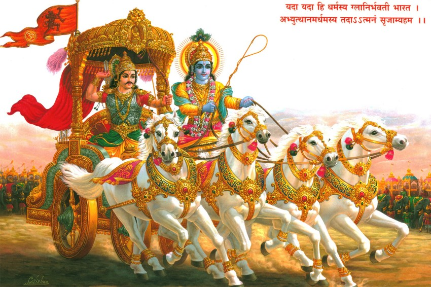
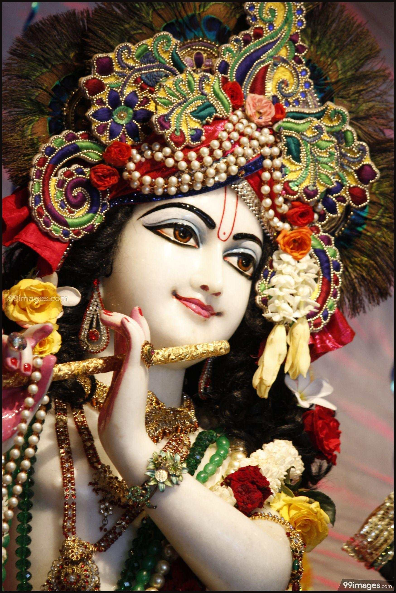

The Basic Knowledge of Bhagavad Geeta
 The concept of Bhagavad Geeta is to change our life and real meaning of Life
In this post, Let's focus on Lord Krishna who is loard krishna and why we need to know about Bhagavad Geeta.
Who is Lord Krishna ?
Shree Krishna's childhood and his divine play (Leelas) in Vrindavan are some of the most cherished and celebrated aspects of his life. These stories, filled with miracles and enchantment, highlight his playful, loving, and mischievous nature. Here are some key episodes from Krishna's early years:
### Birth and Early Life
**Birth in Mathura** - Krishna was born in a prison cell in Mathura to Devaki and Vasudeva. His birth was surrounded by divine signs, as he came to the world to defeat his tyrannical uncle, King Kamsa. - To protect him from Kamsa, Krishna was secretly transported to Gokul, where he was raised by Nanda and Yashoda.
### Miraculous Feats in Gokul
**The Slaying of Putana** - The demoness Putana was sent by Kamsa to kill the infant Krishna. Disguised as a beautiful woman, she tried to poison him by nursing him with her toxic milk. However, Krishna sucked the life out of her, revealing his divine power.
**The Overturning of the Cart (Sakatasura)**
- As a baby, Krishna overturned a heavy cart under which a demon named Sakatasura was hiding, thereby killing him and protecting the village. **Trinavarta Vadh** - The whirlwind demon Trinavarta took baby Krishna into the sky, but Krishna became so heavy that the demon couldn't hold him and crashed to the ground, dying instantly.
### Childhood Leelas in Vrindavan
**Makhan Chor (Butter Thief)**
- Krishna's love for butter led him to steal it from the homes of the Gopis (milkmaids). His playful antics earned him the affectionate nickname "Makhan Chor." His mother, Yashoda, often found him with his hand in the butter pot.
**The Govardhan Puja**
- To teach the people of Vrindavan the importance of worshiping nature, Krishna convinced them to stop performing a ritual for Indra, the god of rain, and instead worship Mount Govardhan. Angered, Indra sent torrential rains to submerge the village. Krishna lifted the entire Govardhan hill on his little finger, providing shelter to the villagers and cattle for seven days.
**Kaliya Mardan (Subduing the Serpent Kaliya)**
- The serpent Kaliya poisoned the Yamuna River, endangering the villagers. Krishna jumped into the river, danced on Kaliya's hoods, and ultimately forced the serpent to leave, purifying the waters.
**Raas Leela**
- One of the most enchanting episodes is the Raas Leela, where Krishna danced with the Gopis under the full moon. This divine dance symbolizes the union of the individual soul with the Supreme, highlighting the pure love and devotion of the Gopis towards Krishna.
### Friendship with Sudama
- Krishna's childhood friend Sudama (also known as Kuchela) visited him in Dwarka when they were both grown. Despite Sudama's poverty, Krishna treated him with utmost love and respect, highlighting the importance of true friendship and humility.
### Krishna and Radha
- The love between Krishna and Radha is the epitome of spiritual love and devotion. Their relationship goes beyond the physical realm, symbolizing the eternal bond between the soul (Radha) and the divine (Krishna). These stories from Krishna's childhood and youth are not just delightful tales but also carry deep spiritual meanings and moral lessons. They emphasize the virtues of love, devotion, righteousness, and the joy of divine play.
- The opening tag
- The closing tag
- The actual element
You can learn more at 'Bhagavad Geeta'
Hopefully you learned something new about Shree Krishna here. See you next Time🙏